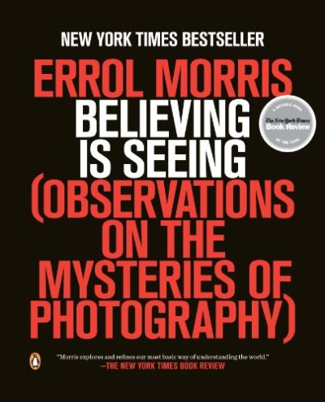
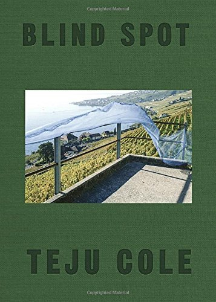
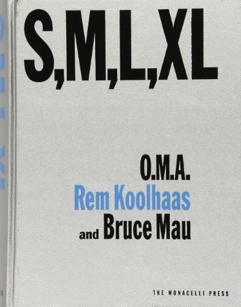
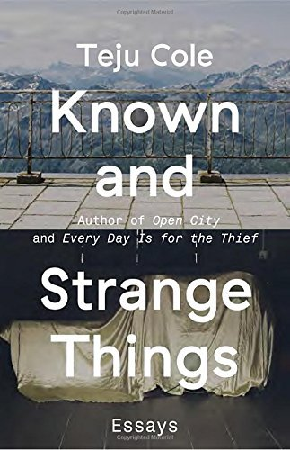

Learning From Las Vegas (MIT Press)
Robert Venturi
A fascimile edition of the long-out-of-print large-format edition designed by design icon Muriel Cooper.
Upon its publication by the MIT Press in 1972, Learning from Las Vegas was immediately influential and controversial. The authors made an argument that was revolutionary for its time – that the billboards and casinos of Las Vegas were worthy of architectural attention – and offered a challenge for contemporary architects obsessed with the heroic and monumental. The physical book itself, designed by MIT’s iconic designer Muriel Cooper, was hailed as a masterpiece of modernist design, but the book’s design struck the authors as too monumental for a text that praised the ugly and ordinary over the heroic and monumental. The MIT Press published a revised version in 1977 – a modest paperback that the authors felt was more in keeping with the argument of the book – and the original Cooper-designed book fell out of print and became a highly sought-after collectors’ item; it now sells for thousands of dollars in the rare book market, while the author-redesigned paperback has remained continuously in print at a price affordable to students. Now, decades after the original hardcover edition sold out, the MIT Press is publishing a facsimile edition of the original large-format Cooper-designed edition of Learning from Las Vegas, complete with translucent glassine wrap. This edition also features a spirited preface by Denise Scott Brown, looking back on the creation of the book and explaining her and Robert Venturi’s reservations about the original design.
Learning from Las Vegas begins with the Las Vegas Strip and proceeds to “Ugly and Ordinary Architecture, or the Decorated Shed,” on symbolism in architecture and the iconography of urban sprawl. As Scott Brown says in her introduction, the book “upended sacred cows … would not bad-mouth bad taste, and redefined architectural research.”
Future Practice: Conversations from the Edge of Architecture
Rory Hyde
Designers around the world are carving out opportunities for new kinds of engagement, new kinds of collaboration, new kinds of design outcomes, and new kinds of practice; overturning the inherited assumptions of the design professions. Seventeen conversations with practitioners from the fields of architecture, policy, activism, design, education, research, history, community engagement and more, each representing an emergent role for designers to occupy. Whether the “civic entrepreneur,” the “double agent,” or the “strategic designer,” this book offers a diverse spectrum of approaches to design, each offering a potential future for architectural practice.
With a foreword by Dan Hill and interviews with Steve Ashton, ARM; Bryan Boyer, Helsinki Design Lab; Camila Bustamante; Mel Dodd, muf_aus; DUS Architects; Jeanne Gang, Studio Gang; Reinier de Graaf and Laura Baird, AMO; Conrad Hamann; Natalie Jeremijenko, xClinic; Indy Johar, 00:/;Bruce Mau; Arjen Oosterman and Lilet Breddels, Volume; Todd Reisz; Wouter Vanstiphout, Crimson; Matt Webb, BERG; Marcus Westbury, Renew Newcastle; and Liam Young, Unknown Fields
 Believing Is Seeing: Observations on the Mysteries of Photography
Errol Morris
**Academy Award–winning director Errol Morris turns his eye to the nature of truth in photography **
In his inimitable style, Errol Morris untangles the mysteries behind an eclectic range of documentary photographs. With his keen sense of irony, skepticism, and humor, Morris shows how photographs can obscure as much as they reveal, and how what we see is often determined by our beliefs. Each essay in this book is part detective story, part philosophical meditation, presenting readers with a conundrum, and investigates the relationship between photographs and the real world they supposedly record. Believing Is Seeing is a highly original exploration of photography and perception, from one of America’s most provocative observers.
 Blind Spot
Teju Cole
When it comes to Teju Cole, the unexpected is not unfamiliar: He’s an acclaimed novelist, an influential essayist, and an internationally exhibited photographer. In Blind Spot, readers follow Cole’s inimitable artistic vision into the visual realm as he continues to refine the voice, eye, and intellectual obsessions that earned him such acclaim for Open City.
Here, journey through more than 150 of Cole’s full-color original photos, each accompanied by his lyrical and evocative prose, forming a multimedia diary of years of near-constant travel: from a park in Berlin to a mountain range in Switzerland, a church exterior in Lagos to a parking lot in Brooklyn; landscapes and interiors, beautiful or quotidian, that inspire Cole’s memories, fantasies, and introspections. Ships in Capri remind him of the work of writers from Homer to Edna O’Brien; a hotel room in Wannsee brings back a disturbing dream about a friend’s death; a home in Tivoli evokes a transformative period of semi-blindness, after which “the photography changed… . The looking changed.”
As exquisitely wrought as the work of Anne Carson or Chris Marker, Blind Spot is a testament to the art of seeing by one of the most powerful and original voices in contemporary literature.
The Braindead Megaphone
George Saunders
From the #1 New York Times bestselling author of the novel ***Lincoln in the Bardo and the story collection Tenth of December*, a 2013 National Book Award Finalist for Fiction.**
The breakout book from “the funniest writer in America”–not to mention an official “Genius”–his first nonfiction collection ever.
George Saunders’s first foray into nonfiction is comprised of essays on literature, travel, and politics. At the core of this unique collection are Saunders’s travel essays based on his trips to seek out the mysteries of the “Buddha Boy” of Nepal; to attempt to indulge in the extravagant pleasures of Dubai; and to join the exploits of the minutemen at the Mexican border. Saunders expertly navigates the works of Mark Twain, Kurt Vonnegut, and Esther Forbes, and leads the reader across the rocky political landscape of modern America. Emblazoned with his trademark wit and singular vision, Saunders’s endeavor into the art of the essay is testament to his exceptional range and ability as a writer and thinker.
Are We Human? Notes on an Archaeology of Design
Beatriz Colomina
The question Are We Human? is both urgent and ancient. Beatriz Colomina and Mark Wigley offer a multilayered exploration of the intimate relationship between human and design and rethink the philosophy of design in a multi-dimensional exploration from the very first tools and ornaments to the constant buzz of social media. The average day involves the experience of thousands of layers of design that reach to outside space but also reach deep into our bodies and brains. Even the planet itself has been completely encrusted by design as a geological layer. There is no longer an outside to the world of design. Colomina’s and Wigley’s field notes offer an archaeology of the way design has gone viral and is now bigger than the world. They range across the last few hundred thousand years and the last few seconds to scrutinize the uniquely plastic relation between brain and artifact. A vivid portrait emerges. Design is what makes the human. It becomes the way humans ask questions and thereby continuously redesign themselves.
 S M L XL
Rem Koolhaas
S,M,L,XL presents a selection of the remarkable visionary design work produced by the Dutch firm Office for Metropolitan Architecture (O.M.A.) and its acclaimed founder, Rem Koolhaas, in its first twenty years, along with a variety of insightful, often poetic writings. The inventive collaboration between Koolhaas and designer Bruce Mau is a graphic overture that weaves together architectural projects, photos and sketches, diary excerpts, personal travelogues, fairy tales, and fables, as well as critical essays on contemporary architecture and society.
The book’s title is also its framework: projects and essays are arranged according to scale. While Small and Medium address issues ranging from the domestic to the public, Large focuses on what Koolhaas calls “the architecture of Bigness.” Extra-Large features projects at the urban scale, along with the important essay “What Ever Happened to Urbanism?” and other studies of the contemporary city. Running throughout the book is a “dictionary” of an adventurous new Koolhaasian language – definitions, commentaries, and quotes from hundreds of literary, cultural, artistic, and architectural sources.

The Image: A Guide to Pseudo-Events in America
Daniel J. Boorstin
First published in 1962, this wonderfully provocative book introduced the notion of “pseudo-events”—events such as press conferences and presidential debates, which are manufactured solely in order to be reported—and the contemporary definition of celebrity as “a person who is known for his well-knownness.” Since then Daniel J. Boorstin’s prophetic vision of an America inundated by its own illusions has become an essential resource for any reader who wants to distinguish the manifold deceptions of our culture from its few enduring truths.
Design: The Invention of Desire
Jessica Helfand
A compelling defense for the importance of design and how it shapes our behavior, our emotions, and our lives
Design has always prided itself on being relevant to the world it serves, but interest in design was once limited to a small community of design professionals. Today, books on “design thinking” are best sellers, and computer and Web-based tools have expanded the definition of who practices design. Looking at objects, letterforms, experiences, and even theatrical performances, award-winning author Jessica Helfand asserts that understanding design’s purpose is more crucial than ever. Design is meaningful not because it is pretty but because it is an intrinsically humanist discipline, tethered to the very core of why we exist. For example, as designers collaborate with developing nations on everything from more affordable lawn mowers to cleaner drinking water, they must take into consideration the full range of a given community’s complex social needs. Advancing a conversation that is unfolding around the globe, Helfand offers an eye-opening look at how designed things make us feel as well as how—and why—they motivate our behavior.The Real World of Technology (CBC Massey Lectures series) Revised Edition
Ursula M. Franklin
In this expanded edition of her bestselling 1989 CBC Massey Lectures, renowned Canadian scientist and humanitarian Ursula M. Franklin examines the impact of technology upon our lives and addresses the extraordinary changes in the bit sphere since The Real World of Technology was first published. In four new chapters, Franklin tackles contentious issues, such as the dilution of privacy and intellectual property rights, the impact of the current technology on government and governance, the shift from consumer capitalism to investment capitalism, and the influence of the Internet upon the craft of writing. Known and Strange Things: Essays
Teju Cole
A blazingly intelligent first book of essays from the award-winning author of Open City and Every Day Is for the Thief
With this collection of more than fifty pieces on politics, photography, travel, history, and literature, Teju Cole solidifies his place as one of today’s most powerful and original voices. On page after page, deploying prose dense with beauty and ideas, he finds fresh and potent ways to interpret art, people, and historical moments, taking in subjects from Virginia Woolf, Shakespeare, and W. G. Sebald to Instagram, Barack Obama, and Boko Haram. Cole brings us new considerations of James Baldwin in the age of Black Lives Matter; the African American photographer Roy DeCarava, who, forced to shoot with film calibrated exclusively for white skin tones, found his way to a startling and true depiction of black subjects; and (in an essay that inspired both praise and pushback when it first appeared) the White Savior Industrial Complex, the system by which African nations are sentimentally aided by an America “developed on pillage.”
Persuasive and provocative, erudite yet accessible, Known and Strange Things is an opportunity to live within Teju Cole’s wide-ranging enthusiasms, curiosities, and passions, and a chance to see the world in surprising and affecting new frames.
Praise for Known and Strange Things
“On every level of engagement and critique, Known and Strange Things is an essential and scintillating journey.”—Claudia Rankine, *The New York Times Book Review *(Editors’ Choice)
“Cole has fulfilled the dazzling promise of his novels Every Day Is for the Thief and Open City. He ranges over his interests with voracious keenness, laser-sharp prose, an open heart and a clear eye.”—*The Guardian
“We have in Cole, a Nigerian American, a continuation of [James] Baldwin’s legacy; he’s an observer and truth-seeker of the highest order… . It is a joy to go inside the mind of someone for whom clever insight is second nature.”—The Seattle Times
“[A] dazzlingly wide-ranging collection.”—San Francisco Chronicle
“[Cole] brings a subtle, layered perspective to all he encounters—whether it’s photographs, books, foreign countries, or Internet memes. The collected essays of Known and Strange Things offer a glimpse of a roving mind in action.”—Vanity Fair
“Essays pulse with the possible; the best ones gesture at unexplored territories. But they feel most satisfying where the author has followed his ideas to places the reader hadn’t thought to visit. Known and Strange Things contains many essays that do this beautifully, combining the thoughtful pause with insistent questioning, tumbling over different terrains, picking up bits of them as they go, taking on the grain and texture of all the places they’ve been.”—Financial Times
“There’s almost no subject Cole can’t come at from a startling angle… . His [is a] prickly, eclectic, roaming mind.”—The Boston Globe
“Bold, thoughtful essays … Cole’s latest book feels like an intimate conversation with an eccentric friend who cannot wait to share his wonderment with the visual world. Like a modern-day Montaigne, Cole patiently teases out deeper meanings from varied art forms and the outer margins of everyday existence.”—Minneapolis Star TribuneExperimental Jetset - Statement And Counter-statement
Experimental Jetset
The first publication on the work of Dutch power trio Experimental Jetset features almost two decades of graphic design praxis. Rather than a monolithic monograph, it is a very loose, personal archive, with essays by Linda van Deursen, Mark Owens, and Ian Svenonius, plus two photographic chapters with a selection of work by the studio, covering both printed matter and the documentation of site-specific pieces and installations. To conclude is a glossary-like anthology of texts (fragments of interviews, lectures, correspondence, etc.) previously written by Experimental Jetset, selected, edited, and structured by Jon Sueda.

On Photography
Susan Sontag
Winner of the National Book Critics’ Circle Award for Criticism.
One of the most highly regarded books of its kind, On Photography first appeared in 1977 and is described by its author as “a progress of essays about the meaning and career of photographs.” It begins with the famous “In Plato’s Cave"essay, then offers five other prose meditations on this topic, and concludes with a fascinating and far-reaching "Brief Anthology of Quotations.”
The Interface: IBM and the Transformation of Corporate Design, 1945-1976 (A Quadrant Book)
John Harwood
In February 1956 the president of IBM, Thomas Watson Jr., hired the industrial designer and architect Eliot F. Noyes, charging him with reinventing IBM’s corporate image, from stationery and curtains to products such as typewriters and computers and to laboratory and administration buildings. What followed—a story told in full for the first time in John Harwood’s The Interface—remade IBM in a way that would also transform the relationships between design, computer science, and corporate culture.
IBM’s program assembled a cast of leading figures in American design: Noyes, Charles Eames, Paul Rand, George Nelson, and Edgar Kaufmann Jr. The Interface offers a detailed account of the key role these designers played in shaping both the computer and the multinational corporation. Harwood describes a surprising inverse effect: the influence of computer and corporation on the theory and practice of design. Here we see how, in the period stretching from the “invention” of the computer during World War II to the appearance of the personal computer in the mid-1970s, disciplines once well outside the realm of architectural design—information and management theory, cybernetics, ergonomics, computer science—became integral aspects of design.
As the first critical history of the industrial design of the computer, of Eliot Noyes’s career, and of some of the most important work of the Office of Charles and Ray Eames, The Interface supplies a crucial chapter in the story of architecture and design in postwar America—and an invaluable perspective on the computer and corporate cultures of today.
The Age of Earthquakes: A Guide to the Extreme Present
Douglas Coupland
A highly provocative, mindbending, beautifully designed, and visionary look at the landscape of our rapidly evolving digital era.
50 years after Marshall McLuhan’s ground breaking book on the influence of technology on culture in The Medium is the Massage, Basar, Coupland and Obrist extend the analysis to today, touring the world that’s redefined by the Internet, decoding and explaining what they call the ‘extreme present’.
THE AGE OF EARTHQUAKES is a quick-fire paperback, harnessing the images, language and perceptions of our unfurling digital lives. The authors offer five characteristics of the Extreme Present (see below); invent a glossary of new words to describe how we are truly feeling today; and ‘mindsource’ images and illustrations from over 30 contemporary artists. Wayne Daly’s striking graphic design imports the surreal, juxtaposed, mashed mannerisms of screen to page. It’s like a culturally prescient, all-knowing email to the reader: possibly the best email they will ever read.
Welcome to THE AGE OF EARTHQUAKES, a paper portrait of Now, where the Internet hasn’t just changed the structure of our brains these past few years, it’s also changing the structure of the planet. This is a new history of the world that fits perfectly in your back pocket.**30+ artists contributions: **With contributions from Farah Al Qasimi, Ed Atkins, Alessandro Bavo, Gabriele Basilico, Josh Bitelli, James Bridle, Cao Fei, Alex Mackin Dolan, Thomas Dozol, Constant Dullaart, Cecile B Evans, Rami Farook, Hans-Peter Feldmann, GCC, K-Hole, Liam Gillick, Dominique Gonzalez-Foerster, Eloise Hawser, Camille Henrot, Hu Fang, K-Hole, Koo Jeong-A, Katja Novitskova, Lara Ogel, Trevor Paglen, Yuri Patterson, Jon Rafman, Bunny Rogers, Bogosi Sekhukhuni, Taryn Simon, Hito Steyerl, Michael Stipe, Rosemarie Trockel, Amalia Ulman, David Weir, Trevor Yeung.